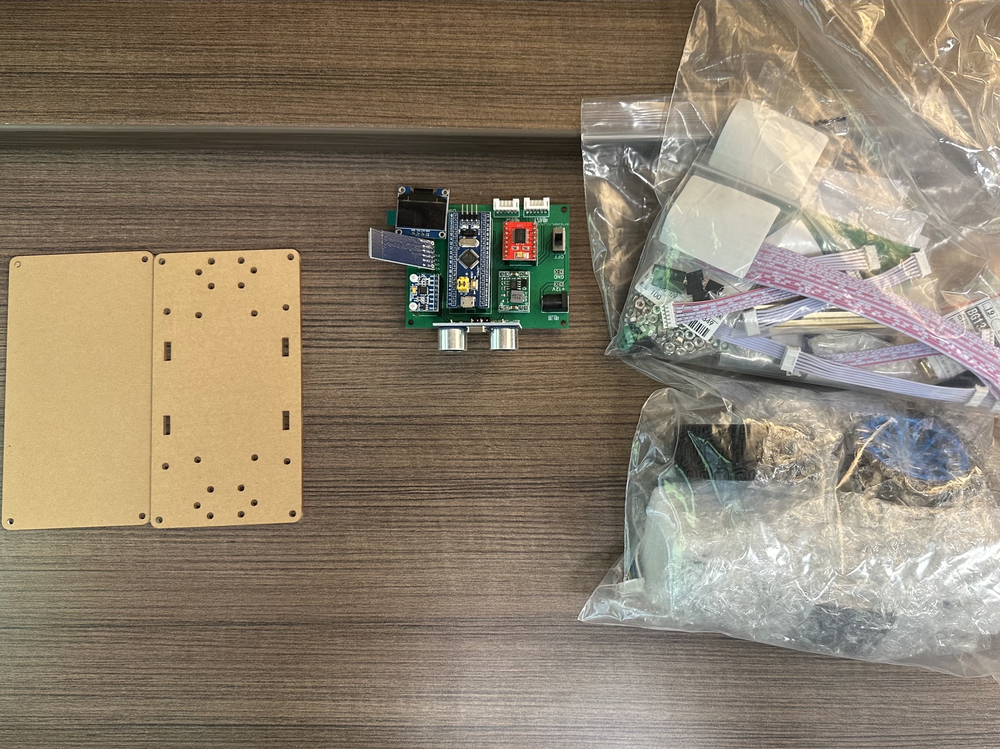
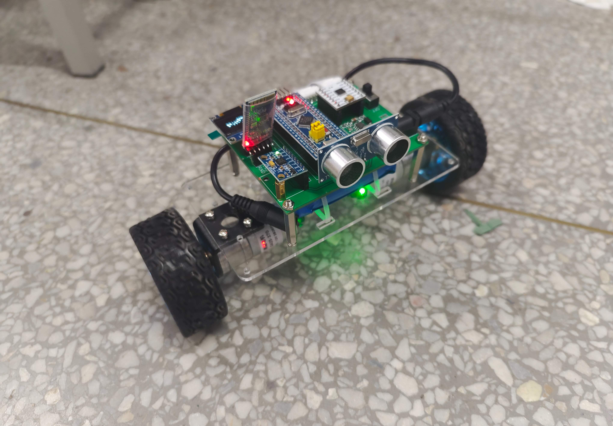

Two-Wheel Balancing Robot (From Scratch)
- Time Span: 2023
- Tech Stack: Embedded C++, PID Control, Circuit Debugging, Sensor Fusion, Mechanical Integration
- Github URL: Project Link
- Reference: Referenced Project
ECE 1100 Discovery Project Idea
My ECE 1100 Discovery Project centered around building a two-wheel balancing robot from scratch, inspired by a video tutorial on Bilibili. I wanted to challenge myself by working on a dynamic system that involves real-time sensor feedback, motor control, and embedded programming—core topics in ECE.
Project Progress
The project started with component selection and chassis design. Over the semester, I:
- Designed and assembled the robot frame using a combination of 3D-printed and off-the-shelf parts.
- Installed and wired up the 2 DC motors, TB6612FNG motor driver, MPU6050 IMU, HC-SR04 Ultrasonic Module, JDY Bluetooth Module, and STM32 microcontroller.
- Implemented PID control to maintain balance using IMU data.
- Tuned the PID values through testing to ensure stability.
Project Images

Robot Components

Balancing Robot in Action
Project Successes and Failures
Successes:
- The robot was able to balance successfully and recover from small disturbances.
- I wrote my own PID loop instead of copying from the tutorial, which deepened my understanding.
- I gained hands-on experience integrating multiple subsystems and debugging them.
Challenges:
- Tuning the PID was harder than expected—small adjustments drastically changed behavior.
- I initially had wiring errors and power supply issues, which caused motor jitter and sensor dropouts.
- Working with noisy sensor data required implementing a basic Kalman filter for stability.
ECE Skills Gained
- Sensor Fusion & Signal Processing: Working with raw IMU data.
- Control Systems: Implementing and tuning a PID controller.
- Embedded Systems Programming: Using C++ on STM32 to integrate hardware.
- Circuit Design & Debugging: Wiring the Robotics systems and debugging issues using multimeters & serial monitors.
- Mechanical-Electrical Integration: Aligning hardware design with control software for optimal performance.
Final Thoughts
This project was a fun. I was able to learn and apply what I learned to a tangible system that responds to the real world. It strengthened my interest in robotics and control systems, and I now feel more confident working with embedded systems.
I plan to continue developing this robot by:
- Remote control through bluetooth on Phone.
- Adding autonomous path-following using more sensors.
- Improving stability with a better IMU and more advanced filtering.